4 Mengorganisasi Mata Kuliah, Bahan Ajar, dan Asesmen Tugas
Pengelolaan tampilan mata kuliah di New E-Learning ITERA mencakup tiga hal: menyusun tata letak agar mudah dinavigasi, memilih bentuk activities yang tepat untuk menyampaikan bahan ajar maupun menjalankan asesmen, dan mengatur kapan tiap bagian boleh diakses mahasiswa. Bagian ini membahas ketiganya secara berurutan: mengatur tampilan mata kuliah lewat section, subsection, dan block; mengenal seluruh kelompok activities yang tersedia lalu memilih bentuk yang paling cocok untuk bahan ajar maupun asesmen; dan terakhir, mengatur visibilitas serta pembatasan akses supaya bahan dan tugas tampil pada waktu yang tepat bagi peserta yang tepat.
4.1 Mengatur tampilan mata kuliah
4.1.1 Section dan Subsection
Gunakan section untuk membagi materi perkuliahan berdasarkan topik, modul, atau pertemuan. Jika suatu section memuat sub-pokok bahasan yang panjang, gunakan subsection untuk merapikan hierarki tanpa membebani halaman utama mata kuliah. Anda memerlukan peran Dosen (Teacher) pada mata kuliah yang dikelola dengan Edit mode aktif; jalurnya lewat Halaman Utama Mata Kuliah → Edit mode (Aktif) → Bagian Section.
- Aktifkan Edit mode pada sudut kanan atas bilah navigasi mata kuliah.
- Untuk mengubah nama section, klik langsung pada ikon pensil di samping judul section (misalnya
New section), ketikkan nama baru sepertiMateri AjaratauTugas dan Penilaian, lalu tekan tombol Enter. Untuk membatalkan, tekan Escape. - Untuk menambahkan konten atau subbagian baru, arahkan kursor ke garis pemisah di dalam section dan pilih tombol tanda tambah (+).
- Pilih Subsection pada menu dropdown yang muncul jika Anda ingin menambahkan subbagian bersarang.
- Untuk menambah section baru di bagian paling bawah mata kuliah, gulir ke akhir halaman dan pilih Add section.
- Gunakan ikon titik tiga (⋮) pada baris section untuk memindahkan posisi (Move), menyembunyikan sementara dari mahasiswa (Hide), atau menghapus section (Delete).
Garis pemisah section menampilkan tombol tanda tambah (+) beserta menu pilihan Activity or resource dan Subsection seperti diperlihatkan pada Gambar 4.1. Judul section langsung diperbarui sesuai teks yang dimasukkan.
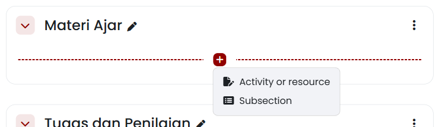
Jika tombol Edit mode tidak dapat digeser atau ikon pensil tidak muncul, periksa peran akun Anda pada menu Participants — akun Non-editing teacher atau Student tidak memiliki izin mengubah struktur mata kuliah. Jika menu Add section tidak tampil di bawah mata kuliah, periksa format mata kuliah pada Settings → Course format dan pastikan formatnya Custom sections atau Topics format. Jika perubahan nama tidak tersimpan, pastikan Anda menekan tombol Enter setelah mengetik teks, bukan mengklik area di luar kotak teks. Perubahan susunan section dan penambahan subsection hanya dapat dilakukan oleh peran Teacher atau pengelola mata kuliah, dan berlaku seketika untuk seluruh peserta yang terdaftar.
4.1.2 Blocks
Panel blok (Block) menyediakan widget ringkas seperti kalender kegiatan, pengumuman terbaru (Latest announcements), daftar aktivitas (Activities), serta status penyelesaian mata kuliah (Course completion status). Anda memerlukan Edit mode aktif dan bilah laci blok (Block drawer) di sisi kanan layar; jalurnya lewat Halaman Utama Mata Kuliah → Buka Block drawer (kanan) → Add a block.
- Buka laci blok di sisi kanan layar dengan memilih ikon Open block drawer jika laci belum terlihat.
- Pilih tombol Add a block.
- Pada dialog modal yang muncul, telusuri dan pilih jenis blok yang diperlukan, misalnya:
- Calendar: Menampilkan kalender perkuliahan beserta penanda tanggal asesmen.
- Latest announcements: Menampilkan ringkasan pengumuman resmi mata kuliah.
- Activities: Menyediakan navigasi cepat per jenis aktivitas (Assignments, Forums, Resources).
- Course completion status: Menampilkan progres ketuntasan belajar bagi mahasiswa.
- Blok yang dipilih akan otomatis disematkan pada laci bilah sisi kanan.
- Untuk memindahkan atau menghapus blok, pilih ikon roda gigi/titik tiga pada header blok yang bersangkutan, lalu pilih aksi yang diinginkan.
Dialog modal Add a block menampilkan daftar lengkap widget blok yang didukung oleh sistem New E-Learning ITERA seperti terlihat pada Gambar 4.2.
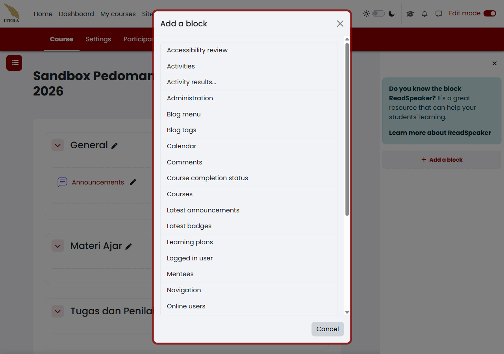
Jika tombol Add a block tidak terlihat pada bilah sisi, pastikan Edit mode sudah dalam posisi aktif. Jika suatu blok tidak muncul dalam daftar modal, periksa apakah blok tersebut sudah pernah ditambahkan sebelumnya ke dalam mata kuliah — Moodle menyembunyikan blok yang hanya diizinkan satu kali pemasangan per halaman. Blok yang ditambahkan pada tingkat mata kuliah hanya tampil di dalam ruang mata kuliah yang bersangkutan dan tidak memengaruhi tampilan Dashboard pribadi pengguna di luar mata kuliah.
4.2 Memanfaatkan activities sebagai bahan ajar dan asesmen
Kelompok Activities di New E-Learning ITERA mencakup jauh lebih banyak pilihan daripada sekadar Assignment dan Quiz. Bagian ini mengenalkan seluruh kelompoknya lebih dulu, lalu memandu memilih bentuk yang paling cocok untuk bahan ajar dan untuk asesmen.
4.2.1 Penjelasan lengkap activities dalam New E-Learning ITERA
Setiap activity di New E-Learning ITERA dapat dikelompokkan menurut fungsinya. Pengelompokan berikut membantu memilih bentuk yang tepat sebelum masuk ke langkah pembuatannya.
4.2.1.1 Kelompok Assessment
Aktivitas dalam kelompok ini menghasilkan nilai atau menilai capaian belajar mahasiswa secara langsung.
| Aktivitas | Fungsi |
|---|---|
| Assignment | Pengumpulan dokumen berkas atau teks daring bertenggat, dinilai dosen |
| Quiz | Ujian interaktif berbasis bank soal, dapat dinilai otomatis |
| Workshop | Penilaian tugas antarteman (peer assessment) |
4.2.1.2 Kelompok Collaboration
Aktivitas dalam kelompok ini dibangun bersama oleh peserta, bukan disiapkan sepenuhnya oleh dosen.
| Aktivitas | Fungsi |
|---|---|
| Wiki | Dokumen kolaboratif yang disusun bersama peserta, mirip Wikipedia |
| Glossary | Kamus istilah yang dibangun dan diperkaya bertahap oleh peserta |
| Database | Bank data/entri terstruktur yang diisi dan dicari bersama peserta |
4.2.1.3 Kelompok Communication
Aktivitas dalam kelompok ini memfasilitasi diskusi atau pertemuan antarpeserta.
| Aktivitas | Fungsi |
|---|---|
| Forum | Diskusi terstruktur asinkron antardosen dan mahasiswa |
| BigBlueButton | Kelas daring langsung (video conference) dengan opsi rekaman |
4.2.1.4 Kelompok Resources
Aktivitas dalam kelompok ini menyajikan bahan ajar statis yang dibaca, diunduh, atau dipelajari mahasiswa secara mandiri tanpa memerlukan pengiriman tugas balik — lihat Tabel 4.1 untuk rincian tiap jenisnya.
4.2.1.5 Kelompok Interactive content
Aktivitas dalam kelompok ini menyajikan konten yang merespons masukan mahasiswa secara langsung.
| Aktivitas | Fungsi |
|---|---|
| H5P | Konten interaktif (video interaktif, kuis ringan, dsb.) yang tertanam sebagai satu aktivitas |
| Lesson | Materi bercabang — halaman berikutnya ditentukan oleh jawaban mahasiswa |
| SCORM | Paket e-learning standar industri yang diunggah utuh ke mata kuliah |
| Choice | Jajak pendapat atau pemilihan opsi tunggal cepat |
| Feedback | Survei kuesioner untuk mengumpulkan umpan balik |
| LTI External tool | Menyambungkan mata kuliah ke alat pembelajaran pihak ketiga yang sesuai standar LTI |
4.2.2 Memilih bentuk activities untuk bahan ajar
| Jenis activities untuk bahan ajar | Paling cocok untuk |
|---|---|
| Resources (File, Folder, Page, URL, Book, Text and media area) | Bahan ajar statis yang dibaca/diunduh mandiri — lihat Tabel 4.1 |
| Lesson | Materi bercabang yang perlu disesuaikan dengan jawaban mahasiswa, mis. modul swa-belajar dengan uji pemahaman bertahap |
| H5P | Konten interaktif siap pakai (video interaktif, kuis ringan di tengah materi) yang ditambahkan sebagai satu aktivitas |
| Wiki | Materi yang disusun/diperkaya bersama mahasiswa, mis. rangkuman kelas kolaboratif |
| Glossary | Kamus istilah mata kuliah yang dibangun bertahap sepanjang semester |
| Database | Bank data/contoh kasus yang dicari dan dipakai berulang oleh mahasiswa |
Kelompok Resources adalah bentuk yang paling umum dipakai untuk bahan ajar. Tabel Tabel 4.1 merangkum seluruh jenisnya:
| Jenis Resource | Fungsi Utama | Contoh Penggunaan yang Relevan |
|---|---|---|
| File | Menyediakan satu berkas dokumen untuk diunduh/dibaca | Silabus perkuliahan (PDF), salindia presentasi, berkas laman HTML web |
| Folder | Mengelompokkan banyak berkas dalam satu wadah | Kumpulan artikel jurnal rujukan, himpunan regulasi/peraturan |
| Page | Menampilkan laman teks web lengkap di dalam Moodle | Panduan praktikum, petunjuk teknis tugas, rangkuman materi berformat HTML |
| URL | Menautkan tautan alamat web ke sumber eksternal | Video rekaman kuliah, repositori data publik, repositori kode |
| Book | Menyajikan materi berstruktur multi-halaman dengan bab dan sub-bab | Modul ajar semester, buku panduan praktikum komprehensif |
| Text and media area | Menampilkan teks/media langsung di halaman mata kuliah | Label pemisah topik, catatan instruksi singkat pertemuan |
| IMS content package | Memuat paket konten standar SCORM/IMS e-learning | Materi modul interaktif dari penyedia luar berformat IMS |
Untuk menambahkan sebuah resource, siapkan berkas atau materi pembelajaran pada perangkat Anda dan pastikan Edit mode aktif, lalu ikuti langkah berikut dari Halaman Utama Mata Kuliah → Section sasaran → (+) → Activity or resource:
- Pada section yang dituju (misalnya
Materi Ajar), pilih tombol tanda tambah (+), lalu pilih Activity or resource. - Pada dialog modal pemilih, buka tab Resources atau cari modul yang diinginkan pada tab All (misalnya Page, File, Folder, atau URL).
- Pilih jenis sumber belajar yang hendak ditambahkan.
- Isi kolom Name dengan judul materi yang deskriptif.
- Lengkapi isi materi sesuai jenis resource:
- Untuk File: Unggah berkas dokumen (PDF, PPTX, DOCX) atau berkas laman web HTML melalui kotak Files.
- Untuk Folder: Unggah beberapa berkas sekaligus ke dalam direktori folder.
- Untuk Page: Ketikkan narasi pembelajaran pada editor teks Page content (atau klik ikon HTML Source Code (
< >) pada bilah editor untuk menempelkan kode HTML/CSS langsung). - Untuk URL: Salin tautan web ke dalam bidang External URL.
- Untuk Text and media area: Masukkan teks atau instruksi langsung pada editor Text.
- Atur bagian Appearance jika ingin menentukan bagaimana dokumen ditampilkan:
- Embed: Menampilkan dokumen atau laman HTML tertanam langsung di dalam bingkai halaman Moodle.
- In pop-up: Membuka berkas atau laman web di jendela peramban sembul (pop-up) terpisah.
- Force download: Memaksa peramban mengunduh berkas langsung ke perangkat mahasiswa.
- Open: Membuka berkas di jendela atau tab peramban saat ini.
- Pilih Save and return to course untuk menyimpan dan kembali ke halaman utama mata kuliah.
Menampilkan Paket Berkas HTML Lokal
Jika Anda memiliki materi pembelajaran interaktif berbasis web lokal yang terdiri atas berkas index.html beserta aset gambar, CSS, dan skrip pendukung:
- Kompres seluruh berkas dan folder tersebut ke dalam satu arsip
.zip. - Unggah berkas
.zipke kotak Files pada modul File. - Klik berkas
.zipdi dalam kotak berkas Moodle, lalu pilih opsi Unzip. - Klik berkas pembuka utama (misalnya
index.html), lalu pilih tombol Set main file sehingga namanya tercetak tebal. - Pada bagian Appearance → Display, pilih Embed atau In pop-up.
Dengan cara ini, Moodle akan merender paket web tersebut sebagai laman HTML interaktif lengkap dengan seluruh aset pendukungnya.
Dialog pemilih menampilkan seluruh modul aktivitas dan sumber belajar seperti terlihat pada Gambar 4.3. Setelah disimpan, ikon dan judul resource tampil rapi pada section yang dipilih.
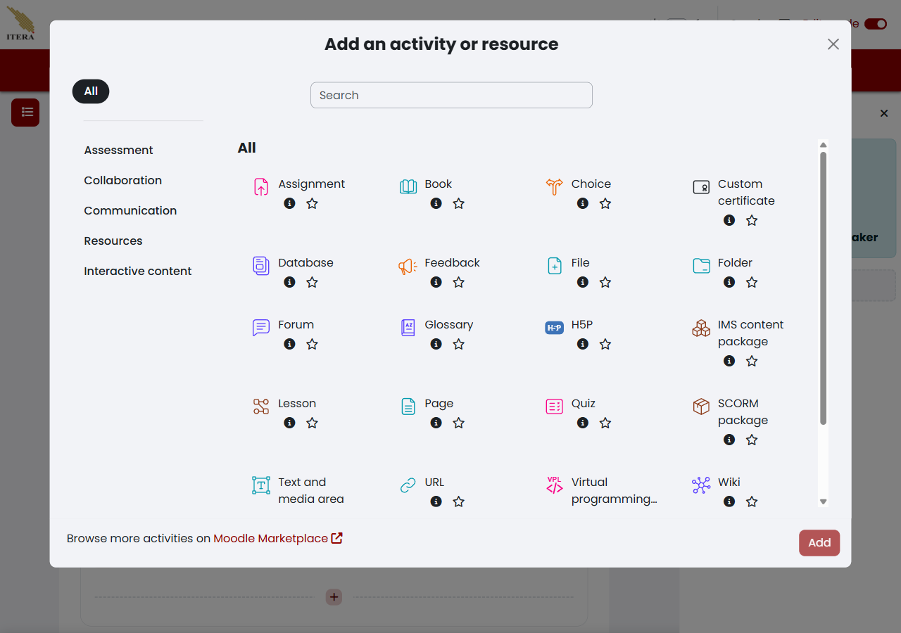
Jika berkas gagal diunggah, periksa ukuran berkas terhadap batas maksimum unggahan mata kuliah (Maximum upload size) — kompres berkas PDF atau presentasi jika ukuran melebihi batas yang diizinkan institusi. Jika teks Text and media area (sebelumnya bernama Label) tampak terlalu panjang dan memenuhi layar, pertimbangkan mengubahnya menjadi Page agar halaman utama mata kuliah tetap ringkas. Dosen berwenang mengunggah, mengganti, dan menghapus seluruh bahan ajar di dalam mata kuliahnya; mahasiswa hanya memiliki akses membaca atau mengunduh sesuai hak akses yang diberikan. Jika bahan ajar tertentu hanya ditujukan untuk kelas paralel tertentu atau waktu tertentu, atur pembatasan aksesnya lewat Restrict access (lihat Bagian 4.3).
4.2.3 Memilih bentuk activities untuk asesmen
| Jenis activities untuk asesmen | Paling cocok untuk |
|---|---|
| Assignment | Pengumpulan dokumen berkas atau teks daring bertenggat — tugas laporan mingguan, tugas besar, esai mandiri |
| Quiz | Evaluasi ujian interaktif berbasis bank soal pilihan ganda/esai — kuis pemahaman, UTS/UAS daring (lihat Bagian 4.2.5, dan Bagian 4.2.6 untuk ujian dengan Safe Exam Browser) |
| Workshop | Penilaian tugas antarteman (peer assessment) — reviu sejawat draft laporan perancangan |
| Feedback | Survei kuesioner evaluasi pembelajaran — evaluasi tengah semester oleh mahasiswa, bukan penilaian capaian |
| Choice | Jajak pendapat cepat berbobot rendah — pemilihan jadwal asistensi, penentuan topik tugas |
Assignment adalah instrumen paling umum untuk mengumpulkan laporan tugas, artikel, data, atau karya mahasiswa baik secara perorangan maupun kelompok, lengkap dengan batas tenggat dan penilaian berbobot. Rincian petunjuk tugas, format berkas yang diminta, serta rentang jadwal pengumpulan perlu ditetapkan lebih dulu, dan Edit mode harus aktif pada mata kuliah. Buka Halaman Utama Mata Kuliah → Section Tugas → (+) → Activity or resource → Assignment, lalu ikuti langkah berikut:
- Pada section
Tugas dan Penilaian, pilih tombol tanda tambah (+), lalu pilih Activity or resource. - Pilih aktivitas Assignment.
- Isi Assignment name dengan nama tugas yang jelas, misalnya
Tugas 1: Analisis Struktur Ruang Kota. - Masukkan instruksi pengerjaan tugas, format luaran, dan kriteria penilaian pada kotak Activity instructions atau Description.
- Pada bagian Availability, atur rentang waktu pengerjaan tugas:
- Allow submissions from: Tanggal dan jam dimulainya mahasiswa boleh mengirimkan tugas.
- Due date: Batas akhir waktu pengumpulan resmi. Pengumpulan setelah waktu ini akan ditandai terlambat (Late submission).
- Cut-off date: Batas akhir toleransi penerimaan berkas. Jika diaktifkan, tombol unggah tugas akan ditutup sepenuhnya setelah waktu ini terlewati.
- Remind me to grade by: Pengingat pada bilah Timeline dosen untuk mulai memeriksa nilai.
- Pada bagian Submission types, atur ketentuan berkas:
- Centang File submissions untuk pengumpulan berkas dokumen.
- Tetapkan Maximum number of uploaded files (misalnya
1atau2). - Tetapkan Maximum submission size sesuai kebutuhan (misalnya
5 MBatau10 MB). - Pada Accepted file types, isi ekstensi yang diizinkan (misalnya
.pdf) atau pilih tombol Choose untuk memilih kategori dokumen.
- Pada bagian Grade, tentukan nilai maksimum (Maximum grade, standar 100) dan metode penilaian.
- Pilih Save and return to course.
Formulir ketersediaan tugas menampilkan pengaturan jendela waktu pengumpulan, tenggat Due date, batas akhir Cut-off date, serta opsi tipe pengumpulan seperti terlihat pada Gambar 4.4.
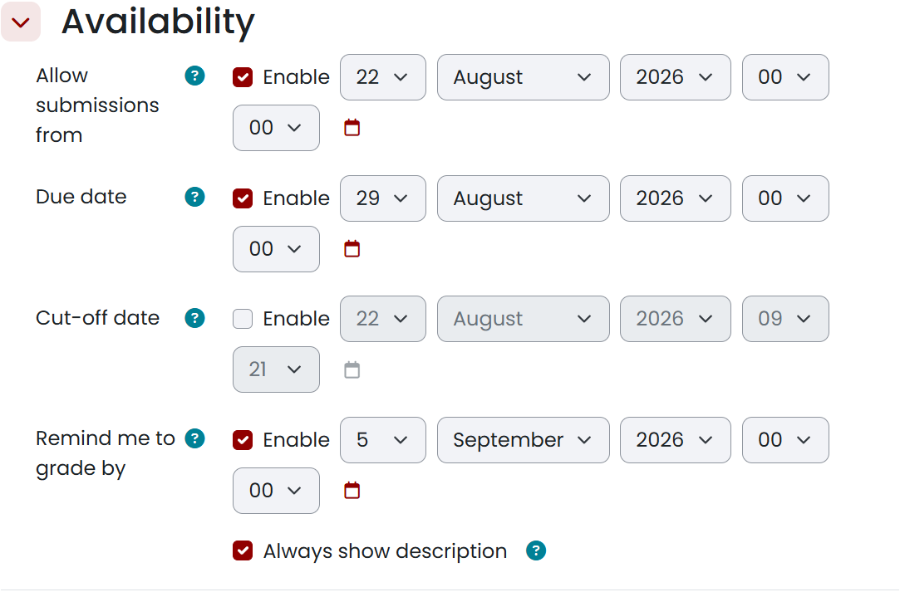
Jika mahasiswa tidak dapat mengunggah berkas padahal waktu Due date belum lewat, periksa apakah kotak Allow submissions from memuat tanggal di masa mendatang atau opsi Cut-off date terkunci secara keliru. Jika mahasiswa mengirimkan jenis berkas yang tidak dapat dibuka (misalnya .pages atau .rar), periksa kembali pembatasan pada bidang Accepted file types. Dosen pengampu bertanggung jawab penuh atas kejelasan tenggat waktu dan kriteria penilaian tugas; asisten pengajar (Non-editing teacher) dapat memeriksa berkas tugas dan memberi masukan, tetapi tidak memiliki izin mengubah tenggat waktu atau bobot nilai tugas pada formulir pengaturan. Setelah tugas dibuat, periksa tampilannya pada bilah Timeline atau Calendar untuk memastikan jadwal pengumpulan telah tercatat dengan benar sebelum masa perkuliahan dimulai.
4.2.4 Mengatur tenggat berbeda per kelas paralel (Group overrides)
Satu Assignment biasanya memakai satu jendela waktu pengumpulan yang berlaku bagi seluruh peserta. Namun ketika satu mata kuliah dibuka dalam beberapa kelas paralel dengan jadwal berbeda — misalnya Kelas RA berkuliah Selasa pagi, sedangkan Kelas RB berkuliah Kamis sore — tenggat Tugas 1 keduanya semestinya juga berbeda. Fitur Group overrides menjawab kebutuhan itu: Anda tetap memakai satu Assignment, tetapi tiap kelas paralel mendapat jendela waktu pengumpulannya sendiri, tanpa perlu menduplikasi aktivitas.
Group overrides bukan Grouping dan bukan Restrict access
Grouping mengatur gabungan beberapa grup, Restrict access mengatur siapa yang boleh melihat aktivitas, sedangkan Group overrides mengatur kapan tiap grup boleh mengumpulkan. Ketiganya mudah tertukar. Kalau yang Anda inginkan hanya membedakan tenggat antar kelas, Group overrides adalah alatnya, bukan Restrict access.
Pilih alat sesuai kebutuhan Anda:
| Kebutuhan | Alat yang tepat |
|---|---|
| Satu Assignment, tenggat sama untuk semua kelas | Pengaturan Availability global — Allow submissions from, Due date, dan Cut-off date pada formulir Assignment |
| Tenggat berbeda per kelas paralel dalam satu Assignment | Group overrides |
| Tenggat berbeda untuk perorangan (dispensasi) | Grant extension (lihat Bagian 5.3) |
| Aktivitas hanya terlihat oleh kelompok tertentu | Restrict access (lihat Bagian 4.3) |
Sebelum memulai, Assignment sudah dibuat, dan grup kelas paralel — misalnya Kelas RA dan Kelas RB — sudah tersedia lewat menu Participants → Groups. Anda memerlukan peran Teacher. Buka Assignment yang dituju, pilih menu More pada navigasi Assignment, lalu pilih Overrides, dan pindah ke tab Group overrides, kemudian ikuti langkah berikut:
- Pilih tombol Add group override.
- Pada Override group, pilih grup kelas paralel yang akan diberi tenggat, misalnya
Kelas RA. - Atur Allow submissions from dengan tanggal dan jam kelas itu mulai boleh mengumpulkan, misalnya
8 September 2026, 07:30. - Atur Due date dengan batas pengumpulan resmi kelas itu, misalnya
15 September 2026, 07:30. - Bila kelas itu memerlukan batas akhir toleransi, centang Enable pada Cut-off date lalu isi tanggalnya.
- Pilih Save.
Formulir Add group override menampilkan pemilih Override group beserta ketiga blok tanggal seperti pada Gambar 4.5.
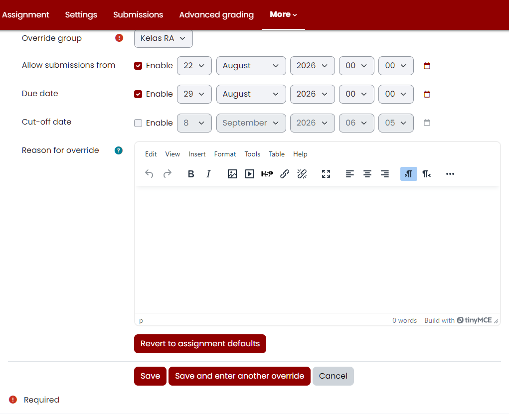
Ulangi langkah yang sama untuk kelas paralel lain dengan tenggat yang berbeda. Halaman Overrides pada tab Group overrides kemudian mendaftar seluruh override beserta tenggatnya seperti pada Gambar 4.6, dan tabelnya merinci tenggat tiap grup pada Gambar 4.7.
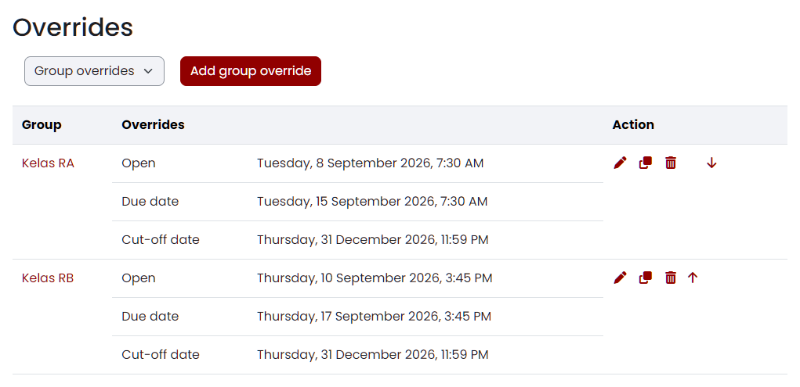
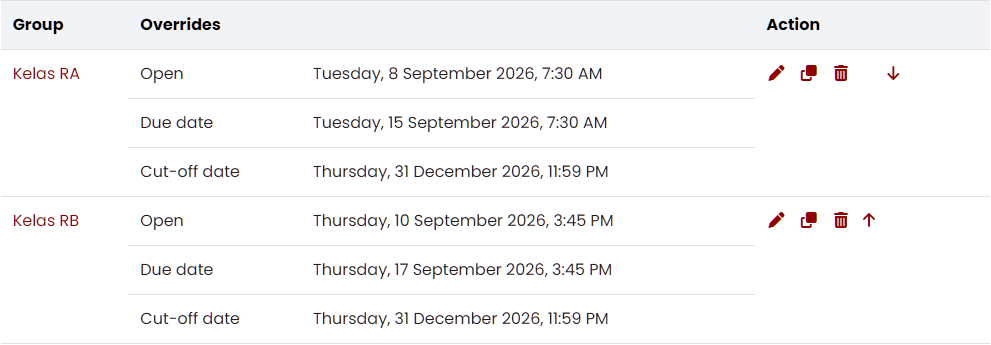
Kolom Open pada tabel itu sama dengan Allow submissions from. Setelah menyimpan override, buka kembali halaman Overrides dan pastikan Cut-off date tersimpan sesuai yang Anda isi; bila nilainya meleset, pilih Edit pada baris yang bersangkutan, perbaiki tanggalnya, lalu Save lagi. Satu Assignment yang memakai beberapa Group overrides tetap menghasilkan satu item nilai di buku nilai — yang membedakan antar kelas adalah tenggatnya, bukan item nilainya. Pengubahan tenggat maupun override hanya dapat dilakukan oleh peran Teacher; Non-editing teacher tidak dapat mengubahnya. Setelah seluruh override tersimpan, periksa halaman Assignment dari sisi mahasiswa untuk memastikan tiap kelas melihat tenggatnya sendiri, lalu lanjutkan ke Bab 5 untuk memantau pengumpulan per kelas.
4.2.5 Membuat Quiz dan mengisi bank soal
Quiz dipakai ketika penilaian berbentuk soal yang dikerjakan langsung di dalam Moodle, bukan berkas yang diunggah. Berbeda dengan Assignment, isi soal Quiz tersimpan di bank soal (question bank) mata kuliah sehingga dapat dipakai ulang pada kuis atau semester berikutnya. Naskah soal, kunci jawaban, bobot tiap soal, dan jadwal ujian perlu disiapkan lebih dulu, dan Edit mode harus aktif. Buka Halaman Utama Mata Kuliah → Section Tugas → (+) → Activity or resource → Quiz, lalu ikuti langkah berikut:
- Pada section yang dituju, pilih tombol tanda tambah (+), pilih Activity or resource, lalu pilih aktivitas Quiz.
- Isi Name dengan nama ujian yang jelas, misalnya
Kuis 1: Konsep Dasar Perencanaan Wilayah, lalu tuliskan aturan pengerjaan pada Description. - Pada bagian Timing, aktifkan dan isi jendela waktu ujian:
- Open the quiz: tanggal dan jam kuis mulai dapat dikerjakan.
- Close the quiz: tanggal dan jam kuis tertutup.
- Time limit: durasi pengerjaan per percobaan, dihitung sejak mahasiswa menekan tombol mulai.
- When time expires: perlakuan saat waktu habis, dengan pilihan
Open attempts are submitted automatically,There is a grace period when open attempts can be submitted, but no more questions answered, atauAttempts must be submitted before time expires, or they are not counted.
- Pada bagian Grade, tetapkan Grading method (
Highest grade,Average grade,First attempt, atauLast attempt) dan Attempts allowed (Unlimitedatau angka1sampai10). Untuk ujian resmi, satu percobaan denganHighest gradeadalah pilihan yang paling lazim. - Pada bagian Layout, tentukan New page — misalnya
Every questionsupaya satu soal menempati satu halaman — dan Navigation method (Freebila mahasiswa boleh bolak-balik antarsoal,Sequentialbila tidak). - Pada bagian Question behaviour, tetapkan Shuffle within questions dan How questions behave. Pilihan
Deferred feedbackmenahan umpan balik sampai kuis diserahkan, sedangkanImmediate feedbackmenampilkannya seketika sehingga tidak cocok untuk ujian bernilai. - Pilih Save and display.
Formulir pengaturan Quiz menampilkan ketiga bagian pertama tersebut secara berurutan seperti pada Gambar 4.8.
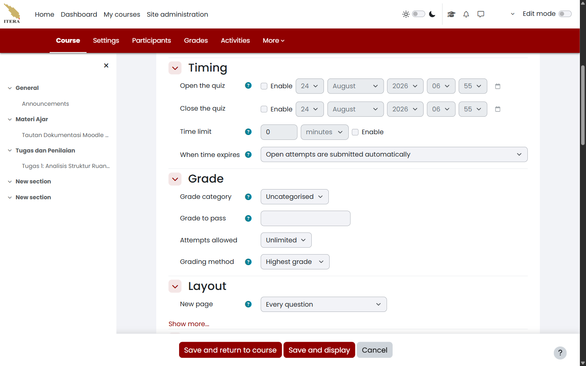
Kuis yang baru disimpan belum berisi soal apa pun. Lanjutkan ke tab Questions, pilih Add → a new question, lalu pilih jenis soal pada kotak dialog Choose a question type to add (Gambar 4.9). New E-Learning ITERA menyediakan antara lain Multiple choice, True/False, Matching, Short answer, Numerical, Essay, Calculated, Drag and drop, Embedded answers (Cloze), dan Description.
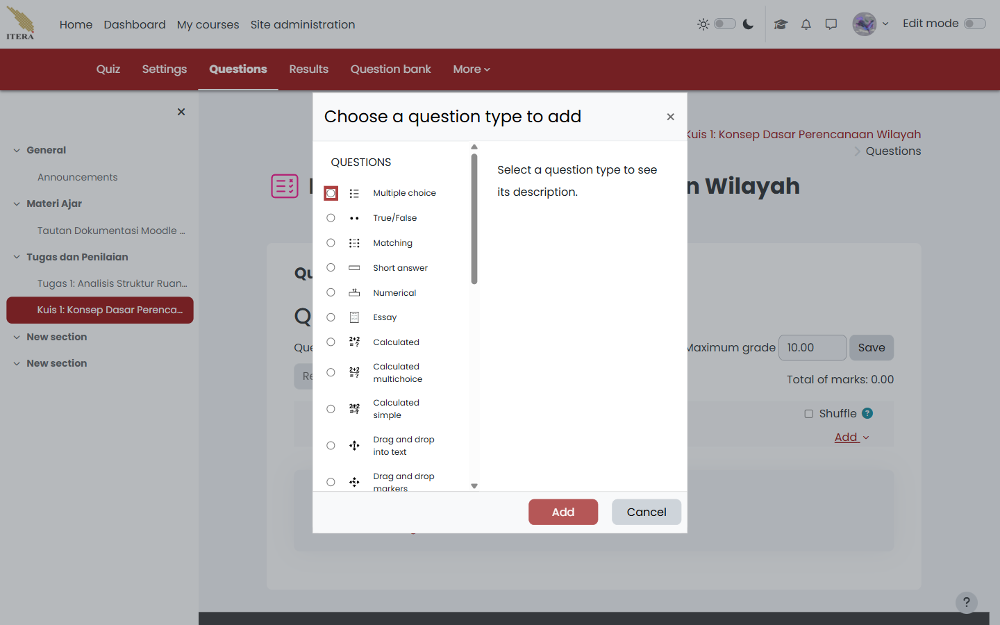
Isi formulir soal dengan Question name sebagai penanda internal, Question text sebagai naskah yang dibaca mahasiswa, dan Default mark sebagai bobot soal. Untuk Multiple choice, tiap pilihan diisi pada kotak Choice 1, Choice 2, dan seterusnya, sedangkan kunci jawabannya ditandai dengan memilih Grade 100% pada pilihan yang benar dan None pada pilihan lain. Untuk Essay, tidak ada kunci jawaban karena soal jenis ini selalu dinilai manual oleh dosen. Setelah semua soal tersimpan, tab Questions menampilkan daftar soal beserta halamannya, kotak Maximum grade, dan keterangan Total of marks (Gambar 4.10).
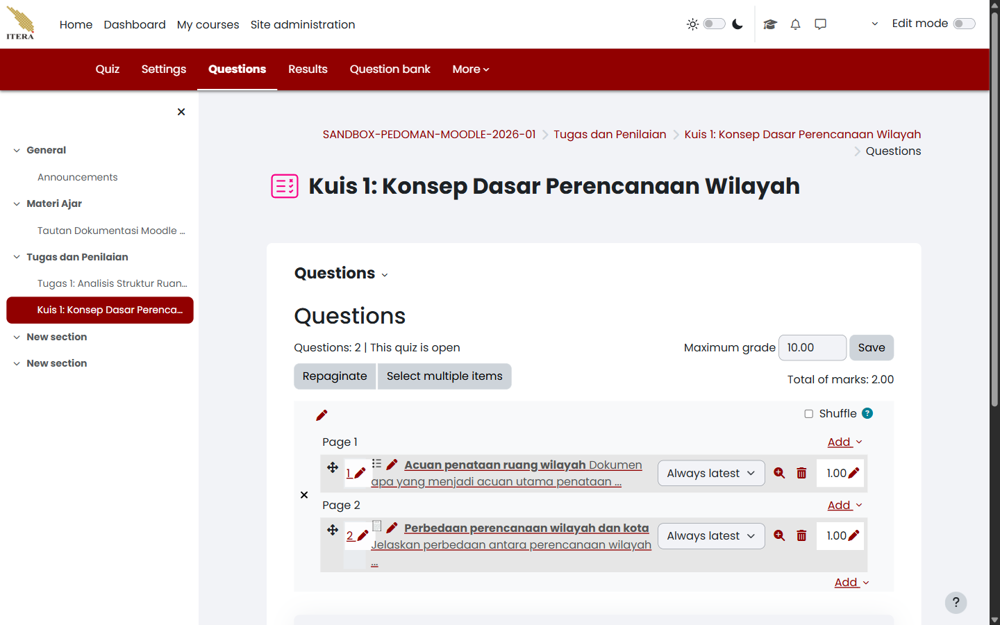
Perbedaan Maximum Grade dan Total of Marks
Total of marks adalah jumlah bobot seluruh soal, sedangkan Maximum grade adalah nilai akhir kuis yang masuk ke buku nilai. Keduanya tidak harus sama karena Moodle menskalakan Total of marks menjadi Maximum grade. Dua soal berbobot 1.00 tetap dapat bernilai akhir 10.00 tanpa perlu mengubah bobot soalnya.
Jika tombol Add tidak muncul pada tab Questions, pastikan Edit mode aktif. Jika daftar soal sudah terisi tetapi mahasiswa melaporkan kuis tidak dapat dibuka, periksa kembali Open the quiz dan Close the quiz pada bagian Timing serta pembatasan pada Restrict access (Bagian 4.3). Dosen pengampu berwenang membuat, mengubah, dan menghapus soal di bank soal mata kuliahnya, sedangkan asisten pengajar (Non-editing teacher) dapat melihat hasil pengerjaan tetapi tidak dapat mengubah soal maupun bobotnya. Setelah kuis siap, periksa tampilannya dari sisi mahasiswa sebelum jadwal ujian dimulai, dan lanjutkan ke Bagian 4.2.6 bila ujian memerlukan pengawasan tambahan.
4.2.6 Mengatur Safe Exam Browser untuk ujian
Safe Exam Browser (SEB) adalah peramban ujian terkunci yang mencegah mahasiswa membuka aplikasi atau tab lain selama mengerjakan kuis. Pengaturannya tersedia di dalam formulir Quiz, bukan pada menu tersendiri, sehingga kuis harus sudah dibuat lebih dahulu (Bagian 4.2.5) dan setiap komputer yang dipakai mahasiswa harus sudah memasang aplikasi SEB. Buka Quiz → Settings → Safe Exam Browser, lalu ikuti langkah berikut:
- Buka kuis yang dituju, pilih tab Settings, lalu buka bagian Safe Exam Browser.
- Pada Require the use of Safe Exam Browser, pilih salah satu dari empat mode:
- No: kuis dapat dikerjakan dari peramban biasa.
- Yes – Configure manually: seluruh perilaku SEB diatur dari formulir ini. Ini pilihan yang paling praktis untuk sebagian besar ujian.
- Yes – Upload my own config: memakai berkas konfigurasi
.sebyang Anda susun sendiri lewat aplikasi SEB Configuration Tool. - Yes – Use SEB client config: memakai konfigurasi yang sudah tertanam pada aplikasi SEB di komputer mahasiswa.
- Bila memilih Yes – Configure manually, atur sub-pengaturan yang muncul di bawahnya:
- Show Safe Exam Browser download button: menampilkan tautan unduh SEB pada halaman kuis mahasiswa. Isi
Yesbila belum semua mahasiswa memasang aplikasinya. - Enable quitting of SEB dan Ask user to confirm quitting: menentukan apakah mahasiswa boleh menutup SEB sendiri dan apakah penutupan itu perlu dikonfirmasi.
- Quit password: kata sandi yang harus dimasukkan untuk keluar dari SEB. Isi bidang ini langsung pada layar pengaturan, dan jangan menuliskannya di dokumen, papan tulis, atau kanal obrolan kelas.
- Enable reload in exam, Show reload button, dan Show SEB task bar: mengatur apakah halaman ujian boleh dimuat ulang dan seberapa banyak kendali yang tampak pada bilah SEB.
- Show time dan Show keyboard layout: menampilkan jam dan pemilih tata letak papan ketik pada bilah SEB.
- Allow browser access to camera dan Allow browser access to microphone: aktifkan hanya bila ujian memang memerlukan rekaman, karena keduanya menyangkut data pribadi mahasiswa.
- Enable URL filtering beserta Expressions allowed, Regex allowed, Expressions blocked, dan Regex blocked: membatasi alamat yang boleh dibuka dari dalam SEB.
- Show Safe Exam Browser download button: menampilkan tautan unduh SEB pada halaman kuis mahasiswa. Isi
- Pilih Save and display.
Bagian Safe Exam Browser pada formulir Quiz tampak seperti pada Gambar 4.11.
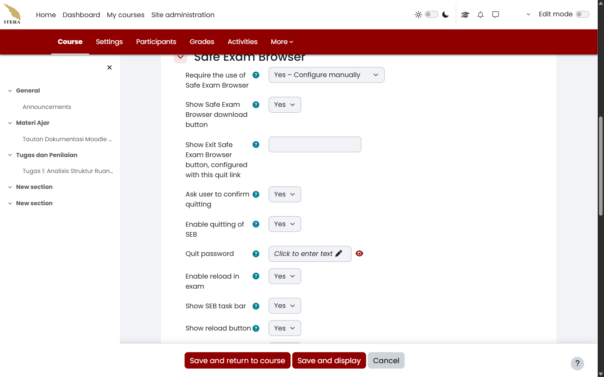
Penetapan Mode SEB Sebelum Percobaan Pertama
Begitu satu mahasiswa memulai percobaan pada kuis, seluruh bidang Safe Exam Browser pada formulir pengaturan berubah menjadi keterangan yang tidak dapat disunting. Untuk mengubahnya kembali, percobaan yang sudah ada harus dihapus lebih dahulu lewat Quiz → Results → Delete selected attempts — dan penghapusan itu ikut menghapus jawaban mahasiswa. Karena itu, tetapkan mode SEB pada saat kuis disiapkan, bukan setelah ujian berjalan.
Setelah disimpan, halaman kuis dari sisi mahasiswa berubah: tombol Attempt quiz tidak lagi muncul dan digantikan keterangan bahwa kuis hanya dapat dikerjakan lewat Safe Exam Browser, beserta tombol Download Safe Exam Browser, Launch Safe Exam Browser, dan Download configuration. Tampilan itu dan cara mahasiswa menyikapinya dijelaskan pada bab asesmen buku panduan mahasiswa.
Batasan Pengamanan Safe Exam Browser
SEB mencegah pembukaan aplikasi lain di komputer yang sama, tetapi tidak mendeteksi telepon genggam, catatan kertas, atau bantuan orang lain di ruangan. Perlakukan SEB sebagai satu lapis pengamanan, bukan pengganti pengawasan ujian.
Jika mahasiswa melaporkan tombol Launch Safe Exam Browser tidak berfungsi, penyebab yang paling sering adalah aplikasi SEB belum terpasang di komputernya — arahkan mahasiswa memakai tombol Download Safe Exam Browser yang muncul di halaman yang sama. Jika mahasiswa sudah berada di dalam SEB tetapi kuis tetap menolak dibuka, periksa apakah mode yang Anda pilih adalah Yes – Use SEB client config padahal konfigurasi pada aplikasinya berbeda, lalu ganti ke Yes – Configure manually untuk menyeragamkannya. Kewenangan mengubah mode SEB dan Quit password ada pada dosen pengampu; asisten pengajar tidak dapat mengubahnya. Sebelum ujian resmi, jalankan satu kuis percobaan tanpa nilai dengan pengaturan SEB yang sama agar masalah pemasangan aplikasi ketahuan sebelum hari ujian, bukan pada saat ujian berlangsung.
4.2.7 Membuat konten interaktif dengan H5P
H5P (HTML5 Package) memungkinkan dosen menyajikan materi interaktif kaya multimedia — seperti video interaktif dengan kuis sela (Interactive Video), salindia presentasi (Course Presentation), kartu latihan (Flashcards), skenario percabangan (Branching Scenario), serta latihan seret-dan-lepas (Drag and Drop). Di New E-Learning ITERA, modul H5P dapat dimanfaatkan melalui dua jalur utama:
- Sebagai Aktivitas Mandiri (H5P Activity): Ditambahkan langsung ke section mata kuliah melalui dialog pemilih aktivitas. Jalur ini terhubung langsung ke buku nilai (Gradebook), mendukung batas nilai kelulusan (Grade to pass), serta merekam laporan percobaan mahasiswa (Attempts report).
- Sebagai Sematan (Embedded Content): Disematkan ke dalam teks materi lain (seperti Page, Book, atau Lesson) melalui tombol sisipkan H5P pada bilah editor teks.
4.2.7.1 Menyiapkan Berkas Paket H5P
Berkas paket H5P (berekstensi .h5p) dapat disiapkan melalui dua cara:
- Bank Konten Moodle (Content bank): Buka menu More → Content bank pada navigasi mata kuliah, pilih tombol Add, lalu pilih jenis konten interaktif yang ingin dirancang langsung di peramban.
- Aplikasi Luar (Lumi Desktop atau h5p.org): Anda dapat merancang konten secara luring menggunakan aplikasi gratis Lumi (
https://next.lumi.education), mengekspor berkas berekstensi.h5p, lalu mengunggahnya ke Moodle.
4.2.7.2 Menambahkan Aktivitas H5P ke Mata Kuliah
Pastikan berkas .h5p sudah siap dan Edit mode aktif. Buka Halaman Utama Mata Kuliah → Section sasaran → (+) → Activity or resource → H5P, lalu ikuti langkah berikut:
- Pada pemilih aktivitas, pilih H5P.
- Isi kolom Name dengan judul materi interaktif yang jelas (misalnya
Video Interaktif: Konsep Tata Ruang). - Pada kotak Package file, pilih ikon berkas (File picker), lalu pilih berkas H5P dari Content bank (pilih Link to the file agar pembaruan di bank konten otomatis tersinkronisasi) atau unggah langsung dari komputer (Upload a file).
- Pada bagian H5P options, centang opsi tampilan yang diperlukan:
- Allow download: Mengizinkan mahasiswa mengunduh paket H5P.
- Embed button: Menyediakan kode semat untuk dibagikan.
- Copyright button: Menampilkan atribusi lisensi dan hak cipta materi.
- Pada bagian Grade, tentukan jenis dan nilai maksimum (Maximum grade, standar 100) serta nilai kelulusan (Grade to pass).
- Pada bagian Attempt options, aktifkan Enable attempt tracking agar sistem merekam skor dan kemajuan mahasiswa saat berinteraksi dengan konten.
- Pilih Save and return to course atau Save and display.
Pemantauan Laporan Percobaan Mahasiswa
Setelah mahasiswa menyelesaikan aktivitas H5P, dosen dapat membuka aktivitas tersebut dan memilih tab Attempts report untuk melihat rekapitulasi percobaan seluruh peserta, persentase ketuntasan (Completion), serta perolehan skor keberhasilan (Success).
Jika berkas H5P gagal dimuat di layar mahasiswa, periksa apakah paket dibuat menggunakan pustaka komponen yang kompatibel dengan versi Moodle yang terpasang. Dosen pengampu bertanggung jawab menyiapkan konten dan menyetel bobot penilaian; asisten (Non-editing teacher) dapat melihat laporan percobaan (Attempts report) mahasiswa, tetapi tidak dapat mengganti paket berkas H5P pada formulir pengaturan aktivitas.
4.3 Mengatur visibilitas dan pembatasan akses
Pembedaan Visibilitas Bahan dan Jadwal Pengumpulan
Moodle menyediakan dua mekanisme pengaturan akses yang berbeda:
- Restrict access & Show/Hide: Mengatur apakah suatu modul tampak atau tersembunyi sepenuhnya bagi peserta/kelompok tertentu di halaman mata kuliah.
- Jadwal Ketersediaan Assignment (Availability): Mengatur kapan mahasiswa boleh mulai mengumpulkan (Allow submissions from), batas waktu normal (Due date), serta batas akhir toleransi (Cut-off date), meskipun tautan tugas sudah terlihat di halaman mata kuliah.
Fitur Restrict access memungkinkan dosen menyaring keterlihatan modul pembelajaran berdasarkan kriteria tertentu, seperti keanggotaan kelas paralel (Group), tanggal kalender (Date), nilai prasyarat (Grade), atau profil pengguna. Modul bahan ajar atau aktivitas harus sudah dibuat, dan kalau membatasi berdasarkan kelas, Group kelas paralel (seperti Kelas RA dan Kelas RB) harus sudah tersedia di mata kuliah. Buka Pengaturan Modul (Edit settings) → Restrict access, lalu ikuti langkah berikut:
- Buka formulir pengaturan modul dengan memilih menu titik tiga (⋮) di samping modul, lalu pilih Edit settings.
- Gulir ke bawah dan buka bagian Restrict access.
- Pilih tombol Add restriction….
- Pada kotak dialog pilihan kondisi, pilih jenis pembatasan yang diinginkan:
- Group: Membatasi akses hanya untuk anggota group tertentu (misalnya
Kelas RA). - Date: Mencegah akses sebelum tanggal/jam yang ditentukan.
- Grade: Mewajibkan nilai minimum pada aktivitas sebelumnya.
- Activity completion: Mewajibkan penuntasan modul prasyarat tertentu.
- Restriction set: Menggabungkan beberapa kondisi secara majemuk dengan logika ALL/ANY.
- Group: Membatasi akses hanya untuk anggota group tertentu (misalnya
- Atur aturan kecocokan: pilih must (harus memenuhi syarat) atau must not (tidak boleh memenuhi syarat).
- Perhatikan ikon mata di samping kiri aturan:
- Mata Terbuka: Modul tetap terlihat oleh mahasiswa yang tidak memenuhi syarat, tetapi dalam keadaan redup/terkunci disertai keterangan syarat yang harus dipenuhi.
- Mata Tertutup (Coret): Modul disembunyikan sepenuhnya dari pandangan mahasiswa yang tidak memenuhi syarat.
- Pilih Save and return to course.
Bagian pengaturan Restrict access menampilkan aturan pembatasan aktif, pemilih grup Kelas RA, serta ikon kendali mata seperti terlihat pada Gambar 4.12.
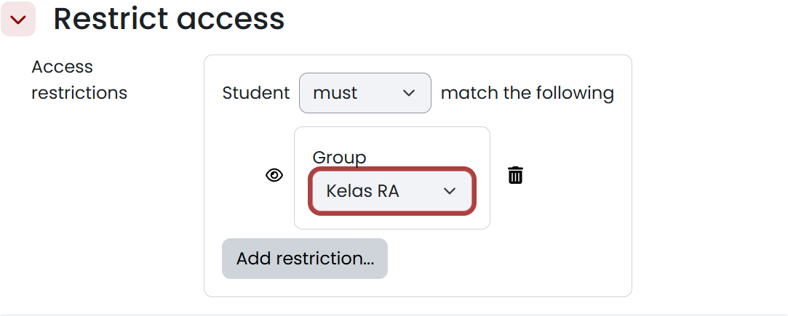
Kelas RA dan kendali ikon mata
Jika opsi Group tidak muncul pada dialog Add restriction, pastikan opsi kelompok diaktifkan pada mata kuliah dan group telah dibuat melalui menu Participants → Groups. Jika mahasiswa yang bukan anggota tetap dapat membuka materi, periksa apakah ikon mata terpasang pada kondisi yang tepat dan pastikan aturan menyatakan Student must match. Pengaturan Restrict access hanya berlaku pada modul yang diatur dan tidak mengubah keanggotaan peserta mata kuliah — jangan menyembunyikan silabus atau kontrak kuliah utama dari kelas lain tanpa instruksi akademik khusus.